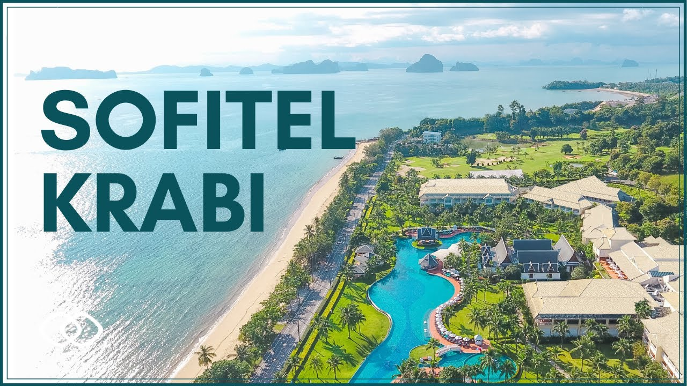

Krabai (Geosarma) Paludariume: pirmasis susitikimas ... Gauruotažnypliai krabai lietuviškame pajūryje pastebimi ne pirmą kartą. "Tai oficialiai į invazinių rūšių sąrašą įtrauktas gyvūnas. Jis nėra plačiai išplitęs. Pas mus jie ne taip išplito, kaip, pavyzdžiui, Olandijoje. Šių krabų yra, jų pagauna žvejai, bet populiacija kol kas didelės įtakos nedaro kitoms rūšims.
Apelsinų ir krabų lazdelių salotos: visi prašė pakartoti Šie krabai kovoja dėl teritorijos, užauga iki 5 cm. Terariume ar akvariume kaip gruntą rinkitės smėlį, paliekant tam tikrą sausą plotą, bet taip pat turėtų būti ir vandens. Jiems nereikia daug vietos, tačiau erdvė turi būti švari. Temperatūra turi būti 23-29 laipsniai. Gyvus augalus gali sunaikin..
4. KRABAS (VĖŽYS) – KARKA | Astrologija sielai Krabai, sugaunami daugelyje jūrų ir vandenynų, ant mūsų stalo nėra dažni „svečiai“. O gaila, nes jų mėsa laikoma gurmanišku maistu ir vertinama labiau nei Lietuvoje daug populiaresnės krevetės ar omarai. Sultinga krabų mėsa bet kokiam patiekalui suteikia malonaus pikantiškumo.
Krabi | su meile is pietryciu azijos Krabai (Geosarma) Paludariume. Įvadas. Prieš kurį laiką sutikau nuostabų žmogų, kuris, nors ir priklauso akvaristų bendruomenei, tuo pačiu skiriasi nuo jų. Jis skiriasi tuo, kad jame yra ne tik žuvies ir krevečių, bet ir nuostabių padarų - gėlo vandens ...
Krabai - LRT Krabi regionas ir jo lankytinos vietos iš viso Tailando išsiskiria keliomis savybėmis: jis yra apsuptas unikalaus uolėto kraštovaizdžio, turi daugiau nei 100 gyvenamų ir negyvenamų salų ir yra žemyninėje dalyje, dėl to patogu susisiekti su aplinkiniais regionais. Tai viena iš labiausiai traukiančių Tailando krypčių. Čia įsikūręs nedidelis Krabi miestelis, apsuptas džiunglių.
Krabi Local – Krabi Travel krabai. Svarbu, Tarpukario Klaipėdos kaleidoskopas Klaipėdoje – šnipų lizdas (1) Tarpukariu gegužės mėnesiai Klaipėdai nepagailėjo ir rezonansinių įvykių, tarp kurių buvo ir tokių, kurie vadinti negirdėto barbariškumo darbais. Apie juos…
Krabai | Receptai.lt Rugepjutes antru dienu issijudinom is Langkawi (ir Malaizijos) Tailando link. Siena kirtom keltu, ir lietuviska penkiasdesimt velnias zino kelinto dydzio Karolio peda ir vel sudrebino Tailando zeme :D Issilaipinom pietu Tailando imigraciniam punkte - Satun. Nors ir kaip graziai sypsojomes pasienio pareigunei, vistiek teko susimoketi po 1000 sandalu, tfu, batu (~30usd) uz viza.
krabai - Atvira Klaipėda
2020.10.29 10:08

P0
Pagrindinis Parama Miestas Koronavirusas Muzikinio teatro metamorfozė Transportas Politika Švietimas Veidai Sveikata Sportas Fotoreportažai Savaitės panorama Konsultacijos Vasara Orai Draugas su uodega Kriminalai Verslas Uostas Nuomonės Spyglys Mums rašo Kultūra Tarpukario Klaipėdos kaleidoskopas Valstybingumo ženklai Klaipėdoje Kelionės laiku 30 metų be komunistinių marazmų Unikali urbanistinė istorija Klaipėdos/Mažosios Lietuvos istorija Senienų žurnalas Regionas НОВОСТИ Kontaktai Pranešk naujieną Pirmasis visiškai atviras naujienų portalas Pagrindinis Parama Miestas Koronavirusas Muzikinio teatro metamorfozė Transportas Politika Švietimas Veidai Sveikata Sportas Fotoreportažai Savaitės panorama Konsultacijos Vasara Orai Draugas su uodega Kriminalai Verslas Uostas Nuomonės Spyglys Mums rašo Kultūra Tarpukario Klaipėdos kaleidoskopas Valstybingumo ženklai Klaipėdoje Kelionės laiku 30 metų be komunistinių marazmų Unikali urbanistinė istorija Klaipėdos/Mažosios Lietuvos istorija Senienų žurnalas Regionas НОВОСТИ Kontaktai Pranešk naujieną
Žyma: krabai
Svarbu , Tarpukario Klaipėdos kaleidoskopas
Klaipėdoje – šnipų lizdas (1)
Tarpukariu gegužės mėnesiai Klaipėdai nepagailėjo ir rezonansinių įvykių, tarp kurių buvo ir tokių, kurie vadinti negirdėto barbariškumo darbais. Apie juos
2020-05-24 Skaityti daugiau
NAUJAUSI STRAIPSNIAI
Planuoja atnaujinti konteinerių paskirstymą K...
2020-10-29
Kaip teisingai dėvėti daugkartines kaukes?
2020-10-29
Karo kankinamų šalių jaunuoliai mokslo aukštu...
2020-10-29
Parama
Jei Jums patinka „Atviros Klaipėdos" žurnalistų rengiami straipsniai ir tikite visiškai atviros bei nepriklausomos žiniasklaidos idėja - paremkite mus, nes į VšĮ „Klaipėda atvirai" sąskaitą pervedama parama yra pagrindinis mūsų pajamų šaltinis.
Paremti
Atviri dokumentai
VšĮ „Klaipėda atvirai" kiekvieno mėnesio pradžioje skelbia, kiek per praėjusį sulaukė paramos. Taip pat - detalią atskaitą apie visas praėjusio mėnesio išlaidas.
Čia galite rasti ir portalo Etikos kodeksą bei VšĮ „Klaipėda atvirai" dalininkų sąrašą.
Su dokumentais galite susipažinti čia
Informacija
Portalas „Atvira Klaipėda” priklauso VšĮ „Klaipėda atvirai”. Plačiau apie įstaigą ir portalą galima paskaityti čia .
Redakcijos adresas: Bangų g. 5A (3 aukštas) Klaipėda, LT-91250 Tel. + 370 650 77550 el. paštas: info@atviraklaipeda.lt
Šioje svetainėje naudojame slapukus (angl. „cookies“). Jie naudojami, kad suteiktume jums geriausią patirtį mūsų svetainėje. Sutinku Daugiau informacijos